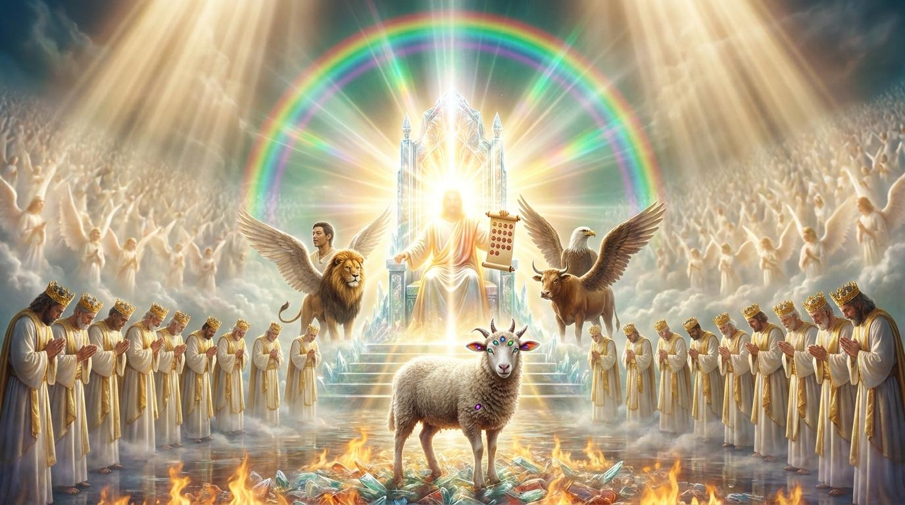

各位弟兄姊妹，當我們面對個人生命的瓶頸時，我們常問：「誰在掌管？」
約翰在異象中大哭，因為他看見了世界的悲劇本質——若沒有救贖主，歷史就是一個無解的封閉書卷。然而，天上的長老告訴他：「不要哭！」
十字架的顛覆性力量
上帝揭開的面紗驚人地翻轉了人類想像：祂是威武的獅子，卻以卑微的羔羊形象出現。這提醒我們，在職場、在家庭、在面對壓迫時，得勝的方法不是暴力，而是像羔羊一樣的犧牲與愛。當我們這樣行，我們的禱告就會化作天上的金香，成為敬拜的一部份。

「不要哭！看哪，猶大支派中的獅子，大衛的根，他已得勝，能以展開那書卷，揭開那七印。」
主耶穌，祢是猶大支派得勝的獅子，卻甘願成為那被殺的羔羊。當我們面對充滿苦難與未知的人類歷史，以及我們個人生命中的無力與絕望時，求祢開我們的眼，讓我們看見唯有祢配得展開那書卷。教導我們放下對屬世權力的迷戀，效法祢犧牲與捨己的羔羊之路，並在萬有齊聲的敬拜中，將所有的榮耀、尊貴、權柄都歸給坐在寶座上的父神與羔羊。奉主耶穌得勝的名求，阿們。
解析：從希伯來文學結構來看，這是典型的「法庭敘事」。書卷內外字句呼應《以西結書》，象徵人類歷史的完整性。多米田皇帝的壓迫使初期教會面臨存在焦慮，約翰的痛哭是面對邪惡似乎永無止境時的靈性真實反應。
解析：採用「對比性反轉」技巧。聽覺是「猶大的獅子」（權柄），視覺是「被殺過的羔羊」（犧牲）。這是救贖歷史的最高峰：上帝不以暴力征服世界，而是以十字架上的愛翻轉邪惡。
解析：以「七」為結構循環，展現神學上的同心圓擴散。祈禱與琴香的組合，說明信徒在地上的苦難，在天上被提升為尊貴的敬拜。萬物最終的歸宿是「坐寶座的和羔羊」。
各位弟兄姊妹，當我們面對個人生命的瓶頸時，我們常問：「誰在掌管？」
約翰在異象中大哭，因為他看見了世界的悲劇本質——若沒有救贖主，歷史就是一個無解的封閉書卷。然而，天上的長老告訴他：「不要哭！」
上帝揭開的面紗驚人地翻轉了人類想像：祂是威武的獅子，卻以卑微的羔羊形象出現。這提醒我們，在職場、在家庭、在面對壓迫時，得勝的方法不是暴力，而是像羔羊一樣的犧牲與愛。當我們這樣行，我們的禱告就會化作天上的金香，成為敬拜的一部份。
「敬拜是人類遺失的珠寶；我們被造的最高目的，就是為了全心全意地敬拜上帝。」
— 陶恕 (A.W. Tozer)
「如果我們不認識上帝的護理，我們就是最悲慘的人；若知道一切都在祂手中，我們的心就能在風暴中安息。」
— 約翰·加爾文 (John Calvin)